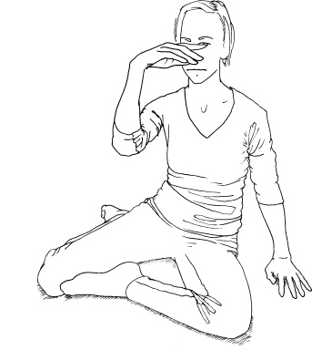
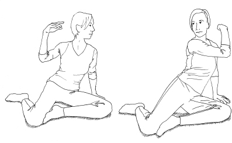
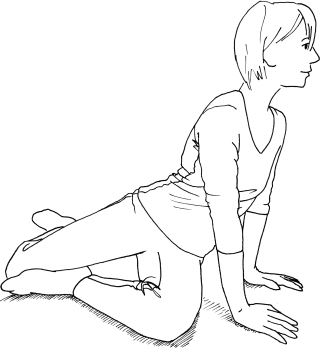
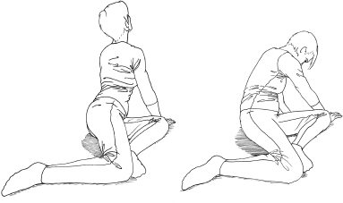
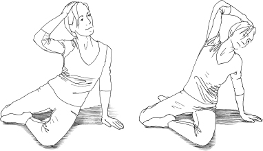

Feldenkrais for Actors
1b. Learning to Do What You Want
In the previous section we looked at how we all have our own personal way of moving and being, which we have learnt and developed since childhood and which we inevitably bring on to the stage or set. I talked about how a child learns to move as wiring up the nervous system: the cells that ‘fire’ together ‘wire’ together, creating habitual firing patterns. The more we use those patterns, the stronger the connections become. If we stop using a pattern the connections weaken and can even fall away.22 We have talked about learning as pruning connections and ripening the nervous system too. I suggested that the Feldenkrais Method is not about attempting to eradicate these habits or ‘correct’ them because they are part of what makes us us, but that as actors (and indeed as people) it is important to be aware that this is the case. At the same time, it is important to know there are other possibilities, and that how we are does not have to be entirely fixed. The Feldenkrais Method gives us a way of exploring those habits. It enables us to become more aware of what we are doing and to develop a greater variety of possible patterns ready and available for our use: a kind of rewiring and sometimes a reawakening of connections we once had and have lost. How does it happen?
The Sixth Sense: Proprioception and the Kinaesthetic Sense
In Lesson 1: Basic Awareness, all we did was a scan. But it’s likely that you discovered things that were either new to you or were things you sort of knew but which became clearer because you spent some time paying attention to them in a structured way. It might have been difficult in places or all together. It depends what kind of facility you have for feeling what you do already. But this is a key skill that the Feldenkrais Method enables you to develop through a wide palate of movement as well. You stayed still to make it easier as a starting point and because simply lying like that will become, over time, a kind of reference point for you to return to, to see what has changed. There are a number of reasons for many Feldenkrais lessons taking place lying down, but one reason is so that you can have the sensory information from your contact with it. In this instance, noticing the very particular ways you distribute your weight and how you place your limbs helps you feel how each part of you habitually responds to lying on the floor. It may not be the same after a lesson, part of a lesson, or a series of lessons. Over time you will find this a very eloquent feedback tool for noticing differences in yourself. However, there is also the need to use your ‘sixth sense’, and that will become an important player in how you learn as you go on – so I need to delve into it a bit.
By sixth sense I don’t mean anything telepathic or extra-sensory. I am referring to ‘proprioception’ or the ‘kinaesthetic’ sense. It is probably left out of the traditional canon of five because it is not a sense that directly enables you to perceive the outside world; instead it enables you to perceive yourself. It involves the extremely important part of the nervous system that gives you information about yourself – what your joints are doing, where your bones are positioned in relation to each other and in space, the tension level in the muscles, and the level of stretch in the tendons and feedback from the skin.23 If you didn’t have it you wouldn’t be able to move or even to stand up easily: your nervous system needs this feedback constantly so that it can activate, inhibit and adjust the work in the musculature to enable you to remain upright or do anything. Most of the time it operates unconsciously, but if you pay attention you can bring it more into the foreground, becoming a crucial tool for learning.
Feldenkrais practitioner and performer Andrew Dawson has done some extremely interesting work with a man called Ian Waterman who came to lack this sixth sense. He taught himself to function by getting the information about his body in other ways, for example, by sight. He had to be sure he was not still standing when the lights went down in the cinema or theatre or he was likely to just fall over. When he woke in the morning he had no ‘sense’ of himself lying in bed. He painstakingly taught himself how to do all the ordinary things people take for granted, like stand, walk or shake hands, by providing himself with other ways of getting feedback, such as watching himself do it. In Andrew’s very powerful performance piece, The Articulate Hand, there is extraordinary and very moving footage of Ian trying to light a match with his eyes closed, in which he has to resort to his mouth to try and have some sense of this box and how to handle it.24 More commonly people lose proprioception in their feet: a kind of neuropathy that can be a side effect of chemotherapy or statins. A member of my family lost the conductivity in just one nerve to the leg/foot. It was a sensory not a motor nerve, but he began shuffling and eventually became mostly wheelchair-bound: the loss of feedback from his leg in movement meant he simply could not use it sufficiently to walk.
Proprioception/The Kinaesthetic Sense
Close your eyes and hold your hand in front of your face. There is a sense in which you can still ‘see’ it with your eyes closed, isn’t there? Move your hand slowly around your head until it is at the back of your head. You can still ‘see’ it, can’t you? And you might well be able to ‘see’ how much your fingers are curling or how open the palm is and how your fingers are spaced. That is proprioception: you are not experiencing your hand by touching it with any part of yourself or by touching something else or by seeing it, but only through your kinaesthetic sense. That is what Ian didn’t have. Can you imagine not having that sense now?
So when discussing this aspect of movement, we often use the term ‘the sensory/motor loop’. And as we have seen, the motor part of your nervous system is not very effective without the sensory component. When you move, it is not just a specific set of muscles doing the job. Your nervous system has to execute your intention through an entire pattern of activity that recalibrates your balance, allows for weight-shift and support, and readjusts everything involved; and it needs to have the information about how all those things are in order to fire the appropriate patterns to adjust any of it. All the time there is sensory information going back into the system reporting on how this action is going, so that motor adjustments can be made as necessary to continue to execute the intention as effectively as possible. That information is coming from the visual system and the vestibular (balance) system in the middle ear, as well as the proprioceptive information we are talking about here, and it all needs coordinating. It’s an extraordinary job25 – and often we only know how extraordinary when we lose part of it, so something everyday, like putting a forkful of food into your mouth or taking a step, becomes a mountain of impossibility to negotiate.
Some of that neural firing is also anticipatory, i.e. your system prepares itself for what it expects to feel from previous experience of similar actions, and then it may have to make a sudden adjustment if it’s wrong. For example, when you pick up a stage prop that looks like a heavy brick but turns out to be made of polystyrene, your arm shoots up because it was pre-programmed for something heavy but suddenly has something light to deal with instead. Or that weird feeling when you are walking downstairs and expect another step down that isn’t there. Or answer this: what is one of the worst kinds of ground to run on? How about uneven grassland where the grass is just too long to see what’s coming? The unevenness isn’t the whole problem, it’s the not being able to see what’s coming. All the time you are hitting higher or lower parts of the ground you didn’t expect, and the muscles in your legs were not pre-programmed for. It’s a horrible, jarring experience. I know it well.
So if you want to work with your movement patterns, it’s not all about ‘doing’. It’s about improving the quality of the sensory input and the ways you anticipate the movement, so that the motor system can do its job more effectively. That’s why there is so much in the Feldenkrais Method about paying attention to your sensations and noticing what you are doing. It is evidence-based,26 but it is also common sense. How many times have you tried to learn something in a sport or on an instrument and heard the teacher say, ‘No, you are doing X with your arm and you need to do Y!’ and you simply have no idea what they mean because you are sure you are doing Y? You may even be cross with them for saying you aren’t doing Y! Then suddenly you have an ‘aha’ moment when you can feel that your arm is doing X; you feel it very clearly and you can feel that X is not in fact Y, and so you are then able to feel what it would be to change it to Y. It means paying attention to what you feel. It may take some reinforcing, and you may go backwards and forwards with it, but you are on the way to making an improvement. That’s the interplay of sensory and motor which makes up the sensory/motor loop.
Sensing Differences: Improving Nuance
It turns out, therefore, that improving the sensory part of the sensory/motor loop is crucial for movement, so paying attention to what we can feel lies at the heart of learning or relearning to move – which is why it also lies at the heart of the Feldenkrais Method.
To be a little clearer: what we are sensing are differences between one movement and another; one way of doing things and another; between movement X and movement Y with the arm. Until you can distinguish between them, you can’t make a choice between them. Furthermore, finer degrees of sensing difference are needed for finer degrees of skill and finesse. A cellist who cannot hear the difference between a note that is true and one that is a tiny bit flat or sharp will play their piece more or less out of tune, and may not learn to play in tune at all because they will not know that it could be or needs to be different. But a cellist who can hear the difference will learn to play in tune because they will always hear when they need to make an adjustment to the note. Moreover, a cellist who can hear different qualities of sound – sweet, fierce, gentle, passionate – and feel the difference in what they can do to create them in the way they use their arm/self to bow – e.g. with just a little more or less pressure, length or attack of the bow – will have greater degrees of difference and so modulation and nuance available to them. And in the same way the finer the ways you, as an actor, can learn to distinguish between one way of doing something and another, the greater your ability to express something will be, the more nuanced your performance and the more sensitive you will become to how something is working. In a sense this is obvious, but it does depend on your ability to feel and make fine differences to what you are doing. Every Feldenkrais lesson is about this, and it is one of the best reasons for working with the Method.
Any actor would agree that it is not so much what you do as how you do it. The devil is in the detail, always. Feldenkrais often said he didn’t teach people to do new things as much as teach them to do the thing they already know in another way – and for an actor that is so important: to be able to do ordinary actions in many ways to suit the character and the moment; to be truly responsive to the situation, the other actors, the current moment of play. And that means increasing your ability to feel, to sense, to notice differences, and so to play with differences. It may seem a bit of a jump from sensing the movement of your shoulderblade to responding to another actor, but in the end it’s all part of the same thing. In the Feldenkrais Method we go back to something much simpler: can you feel what you do? Can you feel the difference between doing it like this or like that or some other way? Can you make a choice about what you do? Are you stuck with one idea about yourself simply because you haven’t experienced any other?
Turning
It’s best if a few people do this, so you have an audience and also so that you can watch other people try it. That way you can see the differences in how different people do it. However, you can do it on your own too.
• Stand with your back to the ‘audience’. All you are going to do each time is turn to look at an imagined person coming into the room (as if from the audience). Each time you know who it is before you turn. You have been waiting for them. Don’t make a ‘clever’ choice. Just do what comes naturally. It’s very simple. Just notice what you do physically each time, and/or the audience can tell you.
• The first time you turn because someone walks in who you are madly in love with.
• The second time it is someone you don’t care about.
• The third time it is someone you are terrified of.
• The fourth time it is someone you are very angry with.
Was it different each time? In what way was it different physically? How much of you turned each time? All of you? Just your head? What parts of your back moved? Did your shoulders turn? Your eyes? What was the speed? What was the level of tension in different parts of you?
The interesting thing about this game is not just that it is different each time but that, if you do it with a number of people and if you are a good enough observer, you will see that the choices they make are not, in fact, just acting choices. They are also about the ways they can and can’t turn. The places in their neck, back, ribs and pelvis that are available for the movement and the places that aren’t. A restriction somewhere reduces the options they have to play with and will colour what they do. It’s likely they won’t notice this is the case because they won’t necessarily feel it as a lack. If you don’t know that something is possible, it is hard to miss it. It is hard even to imagine it. It is more obvious that a piano player with stiff fingers or rigid arms will have less expressiveness, but it is also true for an actor in terms of how they are able to use their whole self. There is a lesson at the end of this section called Sitting and Turning. When you have done it, come back to this game and see if you make some new choices and have greater, easier or more subtle possibilities of expression as a result.
But first it is worth clarifying this aspect of learning further as it also explains something about available acting choices.
We could say that the sense you have of yourself is a bit like a map. But a funny kind of map where some of the parts are drawn in very accurately, some are not very accurate, while some bits are partially or completely missing. If you had to drive from London to the Edinburgh Festival with a map like that you might have trouble. Maybe you would get there eventually but it might be in a rather roundabout way, travelling through places you really didn’t need to go, using a lot more time and energy, or maybe you just wouldn’t be able to get there and have to settle for Glasgow instead – which is a great place to be, but not where your show is on. Or maybe your map doesn’t even have Edinburgh on it, so the whole idea of going there seems impossible and a bit of mystery. That’s the kind of map you may well have of yourself, which is why you couldn’t feel every detail in that first lesson. As time goes on, the more attention you pay, the more you will be able to fill in the blank spaces in your map and reroute the bits that just aren’t accurate or useful.
This is one, rather simplistic way of describing what Feldenkrais called ‘the self-image’. These maps are not imaginary: they are a way of describing how the body is mapped in the brain, which has been much better understood with the advent of MRI and the other advancements in neuroscience.27 Imagine, for example, that you have three or four vertebrae in your back that have gradually stopped moving separately and, over time, have started to move together as a chunk (very common). Gradually your system will have also started to sense these vertebrae not as three or four but as one, and they will be mapped in the sensory cortex of the brain like that. Very hard, then, to learn to move them separately again, until you can find a way for the brain to perceive them as separate. There was even a (rather horrible) experiment done with monkeys where they sewed two fingers together and saw what happened in the brain. The brain started to map them as one finger not two.28 You can probably imagine that if three or four vertebrae of the spine are sensed as one, it will limit the ways you can turn in the previous game, and that has an effect on what is available to you to express yourself. One of the ways the lesson at the end of this part will work is to clarify, distinguish parts and fill in pieces of the map so that more becomes available.
Missing Bits of the Map
You need a partner for this one. One of you, lie on your front and bend one knee so the knee rests on the floor but the foot is in the air. Without looking, make the sole of your foot flat so it is parallel to the ceiling or so that you could rest a book on it. Now, still without looking, try to tilt the outside edge of the foot up and the inside edge of the foot down. Make it a very simple movement of only tilting without dipping the toes or pointing them higher. Then tilt the inside edge up instead. The other person can tell you if you are achieving anything like the instruction. Very likely you aren’t because it is really difficult to have the image of your foot and this movement clearly enough with only your kinaesthetic sense to help you. Watch your friend and see what they do with this movement too. Maybe you can film each other so you can really see what you do.
Then sit on a chair with your feet on the floor and tilt one foot so the outside edge lifts, and then the inside. Make it a very simple tilting. Nothing else. This time you have your eyes and the floor to help you know what you are doing and it is probably a lot easier. When you can do this well enough, go back to the first version lying on your front with your foot in the air – it will probably already be a bit better. Why? Because doing it the easier way, you have filled in some of your image of the foot and its possible movements, and then transferred it.
Put your hand out flat in front of you and close your eyes. Tilt your hand so one edge lifts and the other lowers, and then the other way. That’s usually very easy even with your eyes closed. You have a much more detailed sense of your hand than you do of your foot – for obvious reasons. You use it a lot in many detailed ways and often without looking. Interestingly, if you ask someone to notice where their hand is they don’t tend to look at it (although they might think it was a very odd question). If you ask them how their feet are positioned, they almost always look down at them to find out.
If you don’t have a friend to do the foot thing with, put a book on it. A nice, thin, slippy book. It’s a bit easier to feel what your foot is doing because the contact gives you some feedback, but then challenge yourself to roll from your back to your front without the book falling off. This is pretty difficult and involves more than knowing where your foot is, but that’s a significant part of it…
Feldenkrais included in his idea of the self-image not just our ability to feel the relationship of all the parts of our physical selves and those changing relationships in space and time, but also our emotions, thoughts and beliefs about ourselves and the world, which together form an integrated and interlocking whole. If you live in a culture that believes moving the pelvis is unseemly, it is likely that your ‘map’ of the pelvis and what is involved in moving it is not clearly represented. Finding how it can move in all its ways will involve being able to feel and connect to that area, which will mean some kind of journey to get beyond those beliefs in order to feel ‘allowed’ to do that. As Michael Merzenich, pioneer researcher in neuroplasticity says: ‘The feelings and thoughts about movement are inseparable from the movement itself.’29
The same can happen after an operation, attack or injury, because a traumatic experience like that can go on being associated with a certain area or movement of that area, even if the tissues have long since healed. It may have lost the definition of its representation in the brain through disuse, as it is repeated use that maintains the maps – neurons that fire together, wire together, but the opposite is also true: neurons that stop firing lose their wiring. Part of the job will be to reconnect with the area without the associated pain or trauma – to rewrite the map.
Sometimes there is a complex set of beliefs governing how the person sees themselves in the world that can disrupt the map and make it difficult to effect change. For example, one actor came to see me with a very serious pronation of his ankle/foot (a tilting or even collapsing inwards, which flattens the arch). It was so serious there was a possibility of tearing the tendon on the other side of the ankle that was being stretched by the pronation, and so an operation he didn’t want was being recommended. He had a particular kind of walk – a side-bending, cowboy kind of walk, which I showed him was part of that pattern of pronation that was putting stress on his ankle. He also noticed that when we found a pattern of walking that involved more twisting – one hip forward, one shoulder back – instead of so much bending to the side, his weight shifted away from the inside edge of his heel, which undid the pronation a little and helped reduce the strain on the tendon. However, a week later he came back and said to me that this style of walking just ‘wasn’t him’. Something in him was very attached to his cowboy walk despite the problems it was exacerbating. Of course, I understood – and actually it had been my plan to shift him only just enough in that direction (and gradually enough) for it to be acceptable to his system, not to ask him to change wholesale in a week. Since he was both a clever person and an actor I had thought to show him where we were going because I knew it would interest him, and that the idea of a new possibility like that might engage him as an actor as well as be useful for the health of his ankle. What he was really saying was that his self-image could not expand quickly enough to include such a different style of being. Ultimately, it is often possible to expand your self-image enough over time to integrate very different possibilities. Sometimes it is a quick thing, sometimes slow, depending on how old and deep the pattern is, how key that pattern is to your fundamental sense of self, and how welcome or threatening the new possibility is.
Some actors clearly have a very limited self-image yet make a huge success within those boundaries. They may not have an incentive to ‘grow’ it or may have a fear of ‘diluting’ something that works and sells – or change may just not be welcome in deeper ways. But it’s important to know that we are not talking about something that changes you or makes you less you. On the contrary, we are talking about fleshing out – fully mapping – what is there to be all the more you: the ability to envisage using yourself so that you can play in a myriad of ways and not be stuck in the same old, same old which limits you as an actor. And, eventually, even an adoring public can tire of seeing these limits and start to think of you as a parody of your earlier, fresher – or possibly more adaptable – self. If your map is limited, it will be hard to even contain the idea that you could walk or move in certain ways: filling in the map grows your imagination. By extension, as an actor, when you know that the way a person sees themselves, thinks and responds to the world has something to do with their movement map, you have another way to explore a character’s possibilities and limitations – but only to the extent that you are not simply stuck in your own, of course.
The only way to deal with a surprise that can come (from) any direction is to walk with substantial variability. The same with thought. The same with your operations in general… The richer, the more varied the possibilities of your movement landscapes, the more powerful you are. And the more imaginative you are and the more fun you are having.
Dr Michael Merzenich30
A Feldenkrais lesson creates the conditions in which you can experience how you are and new ways you can be. It helps to fill in, clarify and redraw the maps. I had a one-to-one, hands-on session (Functional Integration, see Part 6) with an ex-martial artist (black belt) from a tough background. I had enabled him to find a soft and easy movement of reaching that extended right through his back without the habitual tension he carried in his chest and arms. He said to me, over and over, ‘I have never felt myself move like this before, I have never experienced myself like this before.’ The italics are the really important words to me. I hear them often from clients and students, because, as one client said to me only today, ‘It’s weird that you can’t feel something until you have felt it.’ Or we could say you cannot imagine what you have never experienced. It’s not much use someone telling you to be grounded if you don’t know what grounded feels like because you have no idea what you are looking for. Someone has to help to create the conditions in which you can experience that and then it’s yours to find and re-find. It becomes part of your map. This man could not find how to ‘be soft’ even though he very much wanted to, because he had lost the sense of what that feels like. No one could tell that young actress in Part 1 to ‘stand tall’ or ‘be strong’ because she had no recent enough experience of it – and so nowhere to go with direction like that. Sometimes it takes many experiences in different ways for the new way of being to become familiar enough or unthreatening enough to be integrated into the map. For my ex-marital artist, it was something he had lost from his image of himself as a child having to deal with tough situations, and he had sorely missed it. His beginning to re-find it, in a Feldenkrais lesson that created the conditions in which he could do that, was a profoundly moving moment. In contrast, it is a great moment when my young male student actors stand up at the end of a lesson and feel themselves taller, broader, more grounded, more powerful and strut round the room, crowing in delight. Especially those for whom that is a new experience. And the young actresses who start to slough off the round-shouldered shyness of their teenage years and stand upright and open-chested. No one could have told them to do that or be like that, but now they have had that experience they have some sense of what they are looking for, of what they can feel again.
Two of the key things that go on in a Feldenkrais lesson that enable you to expand your possibilities as a person and an actor are feeling and experiencing differences and expanding the self-image.
Each one of us speaks, moves, thinks and feels in a different way, each according to the image of himself that he has built up over the years. In order to change our mode of action we must change the image of ourselves that we carry within us. What is involved here… is a change in the dynamics of our reactions, and not the mere replacing of one action by another.
Moshe Feldenkrais31
Two Principles of Learning
1. Getting It Wrong: The ‘No-Rule’ Rule
A big piece of learning – or maybe relearning – is learning how to learn. Real learning, the kind of learning that that baby was doing on the mat, involves a lot of experimentation, trial and error. Error in lots of different ways. Error that may not turn out to be error as much as just a road to somewhere else.
We are all very used to ‘exercises’ in which you have to do something correctly in a prescribed way to get the benefit. If you are seeking to strengthen or stretch a muscle or muscle group then it is really important you do the exercise exactly as prescribed, engaging the desired muscle(s) in the right way to achieve the desired effect. If you have done choreographed dance or a martial art, you will also be used to having to learn a movement or sequence of movements very exactly and that there is a correct way to do it – and many incorrect ways! But what we are doing in the Feldenkrais Method is different. We are not doing exercises, resistance training, or even actually stretching, and we are not learning a particular set of specific movements: we are learning something about ourselves, experiencing differences, expanding our self-image and discovering how we can use all the parts of ourselves together in many different ways – according to what works for what we want to do in that moment.
That baby in Part 1a didn’t have a goal of hitting the toy: he didn’t even know the goal existed as he’d never experienced it before. But once he did something he recognised was useful and interesting, he started to organise himself bit by bit to do it again. And again. Better and better. Many trials, much error, until the pathway became clearer, the irrelevant efforts fell away and it became simpler, easier and more effective. So in the Feldenkrais Method you explore, in a structured way, what is involved for you (the whole of you!) in a movement or small sequence of movements. You try out a variety of possibilities to feel more of what can be involved, and you improve at the rate available to you, rather than forcing yourself to do something whatever the cost. This process of allowing yourself to learn turns out to be more important than forcing yourself to achieve a specified end – which, in this context, is paradoxically more likely to take your further away from achieving anything other than strain. As Lecoq says, discussing the use of the neutral mask, ‘Telling the students how to do it would be to hinder them… they would be too worried about doing it right, whereas their primary need is to experience.’32
So with Feldenkrais, when people first start, of course they want to know if they are ‘getting it right’ and are keen to know what is ‘correct’. But that misses the point; in fact, there is almost never such a thing as universally ‘correct’. While some ways of doing something may well work better than others, and sometimes what works for something specific is, of course, specific, most people want to extend what they have found is valuable in one situation to all situations – and often they are taught that way too. But, actually, we need lots of ways of doing the same thing usefully according to the circumstances. How you reach for something is going to be different depending on what you are reaching for, where it is, how far away it is, how urgently you need to get it, whether you have to pay attention to something else at the same time, how safe or dangerous the situation is, whether it is pouring with rain… and so on. Just as turning was different every time the circumstances changed in that very simple game on p. 51. Standing with your feet under the hip joints may be good practice (if you can do it) in some situations but not, for instance, if you are preparing to receive a serve in tennis or swing a golf club. Standing with your feet in parallel may be required for some activities but it is a specific demand on the ankles, hips and back that means it is not the most natural way of standing for most people, or in any way universally ‘correct’.
On a different note, if someone has the experience of themselves with a very wide-open chest at the end of a Feldenkrais or some other kind of movement lesson, and that feels wonderful, it still may not mean they should be like that in everything they do. How can you wrap your arms round someone with such an open chest? How can you put on your shoes? How do you play a down-trodden woman with no sense of self-worth like that? Or a boy who is being bullied at school, unless this is his defence (could be interesting actually…)? A wide-open chest is a wonderful option to have, and it is very limiting not to have that option, but that is all it is: one option amongst many. We want many. Our choices need to be specific to the particular activity or situation. So don’t fall into the trap of ‘one rule fits all’.
In addition – ironically – if you constrain yourself to trying to do what you think is ‘correct’ all the time, you give yourself less opportunity to stumble across something that works better – just as trying to ‘get it right’ in rehearsal often cuts off avenues of exploration that lead to great discoveries. Todd Hargrove quotes the interview with Merzenich saying it is better ‘to move to a point in space in 100 different speeds in 100 different ways… than to move 200 times in the same way to get to that point in space.’33 Be like that baby. Allow yourself to play, to make many mistakes, to feel all of it, to discover and not to censor. The discoveries you make for yourself even when they are less than helpful will be of much more use than a list of rules, because the discoveries will have variability, context and connections. Allowing yourself to play will help you develop more of that habit in rehearsal and performance too. The idea of play and not being constrained by what is ‘proper’ or ‘correct’ is stressed by teachers as widely different as Philippe Gaulier and Sanford Meisner. Back as far as Copeau, actors have been advised to watch children play, to recapture that sense of themselves.
It’s also worth asking how often you play a character who gets it ‘right’? You could spend ages learning to stand ‘correctly’ according to some set of rules and hardly ever be able to use it because you will be playing a human being and human beings don’t tend to do things correctly – especially not characters in dramas, because then where would the drama be? Rules don’t help actors a lot as they will always have to break them. In Feldenkrais there are no rules as such, rather relationships and patterns, because if you can gain a sense of how all the different parts of you move in relation to each other in many different ways then that is something you never have to throw away.
Ultimately, the most important aspect, perhaps, is that an actor needs to be able to draw a performance out of themselves, so that they remain internally connected. Directors mostly seek to create situations to enable an actor to do that (in relation to the text), rather than decide what they want from the actor and give them a line-reading, because they know that imposing from the outside does not often produce a good result. Feldenkrais is useful for actors as a process because it does not impose from the outside; it too creates a situation through the instructions in a lesson and asks the actor to draw responses to those instructions out of themselves. It fosters a ‘connectedness’ and does not give line-readings.
John Heilpern in his book on The Conference of Birds says Peter Brook liked working with Moshe Feldenkrais specifically because he felt Moshe didn’t work to a ‘system’ as such (Peter Brook did not like his actors to be constrained by methods). An important tenet for a Feldenkrais teacher is ‘give the person what they need at this moment’, i.e. seek to enable them to learn what they need to learn right now. That makes for some pretty different-looking lessons sometimes, especially if you are working one to one.
2. Quality Not Quantity
With traditional exercises, more (more weight, more reps, greater range of movement in the joint, longer, bigger, higher, further, for longer) is often seen as progress, which it may indeed be for some kinds of exercise. But when you are working to develop skill, that is not necessarily true and is, in fact, likely to get in the way. We are looking at better organised, easier, smoother, less effortful movement – i.e. more skill – which might mean using less of everything else while you are learning. More skill is likely to facilitate those other kinds of ‘more’ too, if that interests you. In business circles they talk about ‘working smarter’ rather than working harder, and the same is true here. We will return to this theme when we talk about effort in Part 3 as it is a BIG theme. This will do for now.
Stand for a moment and, without stepping, turn to look behind you. Notice which way you chose to go first. Keep going in that direction and notice the ease of the movement as well as how far you can turn and look. Don’t go so far that any place feels strained, even if that limits the movement.
Listen carefully to which parts of you are involved in the movement? Do you just turn your neck and head? Are your shoulders part of this turning? How much of your back? Does it involve your pelvis? Your legs? Is the movement mostly in one place like the neck or ankles or is it shared?
Try out the other direction and notice if it goes more or less easily. What else is different about how you do it on this side?
Now sit, knees bent and with both feet to one side, so one leg is bent in front and one leg is bent behind, whichever way round is most comfortable for you. Lean on the hand on the side of the front leg and bring the other hand up in front of your face at eye level. Let the elbow hang down and let the hand flop from the wrist so you have as little work to hold up your arm as possible. Take breaks between each block of movement, but remember where your legs were so you can come back to exactly the same position.
Turn as if you could look around yourself, keeping your hand in front of your face at eye level so it travels too, even if that limits the movement of your head. If your right leg is in front turn to the right, if your left is in front turn to the left.

Keep leaning on the other hand for support. When you have done this and come back to the middle a few times, turn once more as far as you can go comfortably and easily and stay there. Do not strain or force. Look beyond your hand and spot something immediately opposite on the wall that can act as a marker for how far you have turned.
Turn around again as far as you can go comfortably in this same direction. Stay there. Now turn only the eyes back in the direction you have come and then back to your hand. Nothing else – not even your head – moves. Do it many times smoothly and gently.
Test: Come back to the middle with all of yourself, close your eyes and turn again. When you have reached the furthest place you can go easily, open your eyes again and check your marker. Have you turned the same amount, further or less far?
In the rest of the lesson do this test with closed eyes at the end of each step and open them, to see whether you have turned further than your marker. Never force it. In all the following steps we will keep turning in the same direction, still leaning on the ‘front’ arm and still having the ‘back’ arm up in front of the eyes as described.
Turn once again in the same way in the same direction. Don’t forget to let your elbow drop and your hand flop, but have your hand at eye level and keep it there as you turn. Stay wherever you get to. Turn the eyes further in the direction you have been turning. Only the eyes, and back to your hand many times. Do the test.
Turn everything again; stay where you can go easily. Move the head and eyes back in the direction you have come, but take the arm further on, in the opposite direction to your head so there is a distancing between the hand and the eyes. Then take the head and eyes to the middle and keep turning them further on, and at the same time bring the arm back in the direction you have just come so there is a kind of crossing. Make these movements many times and then do the test.

Turn again and this time listen to what the sit bone/buttock of the back leg does. Does it lift as you turn or not? Does it help to let it lift and lean more on the front leg as you turn? Notice how it comes back towards the floor as you return. Do this several times and then do the test.
Turn again as far as you can easily and stay there. Put both hands on the floor near the front knee or even on the other side of it, depending on how far you have turned.
Stay in that position. Move one shoulder forward and the other back and then vice versa. Feel how your back moves with this. Make this shoulder movement many times, come back and do the test.

Turn again; put both hands on the floor again near to each other wherever they get to now. Look down at the floor, allowing your whole back to round, and then look up, allowing your whole back to arch – but only as much as is comfortable. Let the pelvis move to help.
Do this many times and then come back and do the test.

Turn again; place one hand on the floor wherever it can be and put the other on the top of your head, the elbow sticking out in the direction your ear points. Bend the whole chest so the head and elbow go down to the side only as far as it goes easily. It is tricky to define what is ‘to the side’ in this twisted position but make it as much like side-bending as you can, and as little like arching and rounding or twisting as you can. Swap hands and do the same to the other side.

Do the test one final time and notice how much further you turn now.
Don’t do the other side yet.
Stand up, turn to look behind you in the same direction you have been turning and feel how it is. Listen to the movement carefully. Do more places join in now? Is there a different sense of ease? By playing with every part involved in turning like this, your system has learnt something that you may not have been able to put together by thinking or exercising. Several times that you did the test it may have been evident that your system had learnt something from the previous movement and just included it without you being cognitively in charge. That’s kind of how it works.
Now go back and try the game Turning, earlier in this chapter (p. 51). Do you have more nuance available to you? Doing the game before and after with a friend can be helpful as they may see the difference even if you aren’t sure. Try turning to the other side. It may have learnt something too and also be improved, or it may feel considerably less easy – and less articulate – by comparison.
Now you can do the lesson on the other side if you choose!